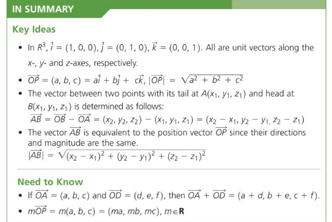

That's a Wrap

Please review the following Learning Goals of this section and check the Success Criteria you already achieved.
Tabs
Learning Goals
Students will review the vector and its properties.
Students can write the equations of lines in R2 (two-space) in their vector and parametric forms.
Success Criteria
I Can….
Recall and explain direction vectors.
Explain how a vector equation connects to the slope of the line.
Explain how the vector and parametric equation of the line are created.
Create a vector and parametric equation of the line.

Learning Goals
Students know how to convert vector equations and parametric equations of lines to cartesian equations in R2 (two-space).
Success Criteria
I Can….
Recall and explain vector and parametric equations of the line.
Explain how cartesian form is created from the vector and parametric equations of the line.
Create a cartesian equation of the line given the vector of the normal.

Learning Goals
Students know how to write the vector, parametric, and symmetric equations for lines in R3 (three-space).
Success Criteria
I Can….
Recall and explain vector and parametric equations of the line.
Explain how the cartesian form is created R3.
Create symmetric equation of the line is created given the vector or parametric equations.

Learning Goals
Students know how to use the equations of lines in R3 to define the equations of a plane.
Success Criteria
I Can….
Explain lines and planes in R3.
Recall and explain vector and parametric equations of the line in R2.
Explain how vector and parametric forms are created R3.
Explain how the cartesian form is created R3.
Create symmetric equation of the line is created given the vector or parametric equations.
Find the angle between Intersecting Planes.


Learning Goals
Students can sketch planes in R3 coordinate grids.
Success Criteria
I Can….
Explain graphs with equations.
Explain the varying coefficients in the Cartesian equation.
Explain the procedure in sketching planes in R3.
Sketch planes in R3 when D = 0 and D ≠ 0.